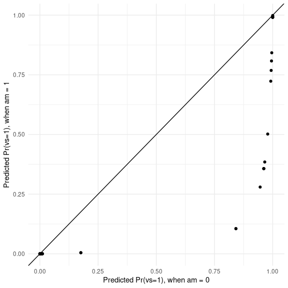
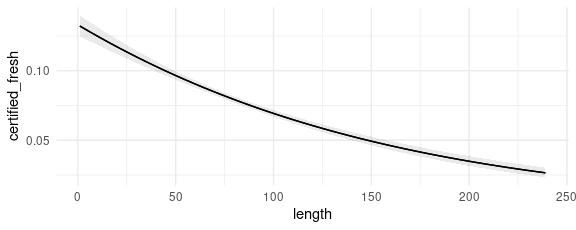
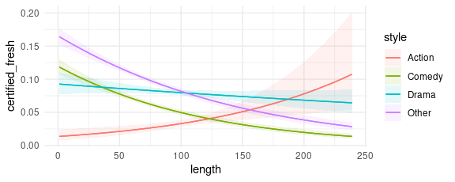
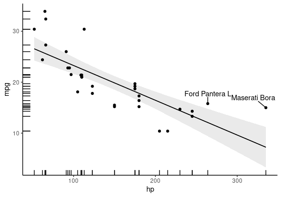
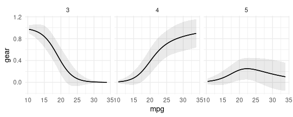
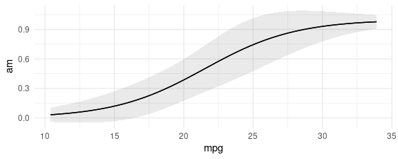
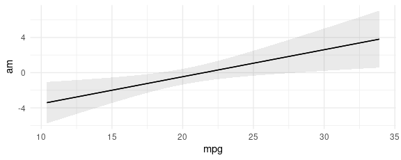

Predictions
In the context of this package, an “Adjusted Prediction” is defined as:
The outcome predicted by a fitted model on a specified scale for a given combination of values of the predictor variables, such as their observed values, their means, or factor levels (a.k.a. “reference grid”).
Here, the word “Adjusted” simply means “model-derived” or “model-based.”
Prediction type (or scale)
Using the type argument of the predictions() function we can specify
the “scale” on which to make predictions. This refers to either the
scale used to estimate the model (i.e., link scale) or to a more
interpretable scale (e.g., response scale). For example, when fitting a
linear regression model using the lm() function, the link scale and
the response scale are identical. An “Adjusted Prediction” computed on
either scale will be expressed as the mean value of the response
variable at the given values of the predictor variables.
On the other hand, when fitting a binary logistic regression model using
the glm() function (which uses a binomial family and a logit link ),
the link scale and the response scale will be different: an “Adjusted
Prediction” computed on the link scale will be expressed as a log odds
of a “successful” response at the given values of the predictor
variables, whereas an “Adjusted Prediction” computed on the response
scale will be expressed as a probability that the response variable
equals 1.
The default value of the type argument for most models is “response”,
which means that the predictions() function will compute predicted
probabilities (binomial family), Poisson means (poisson family), etc.
Prediction grid
To compute adjusted predictions we must first specify the values of the
predictors to consider: a “reference grid.” For example, if our model is
a linear model fitted with the lm() function which relates the response
variable Happiness with the predictor variables Age, Gender and Income,
the reference grid could be a data.frame with values for Age, Gender
and Income: Age = 40, Gender = Male, Income = 60000.
The “reference grid” may or may not correspond to actual observations in
the dataset used to fit the model; the example values given above could
match the mean values of each variable, or they could represent a
specific observed (or hypothetical) individual. The reference grid can
include many different rows if we want to make predictions for different
combinations of predictors. By default, the predictions() function
uses the full original dataset as a reference grid, which means it will
compute adjusted predictions for each of the individuals observed in the
dataset that was used to fit the model.
The predictions() function
By default, predictions calculates the regression-adjusted predicted
values for every observation in the original dataset:
library(marginaleffects)
mod <- lm(mpg ~ hp + factor(cyl), data = mtcars)
pred <- predictions(mod)
head(pred)
#>
#> Estimate Std. Error z Pr(>|z|) S 2.5 % 97.5 %
#> 20.0 1.204 16.6 <0.001 204.1 17.7 22.4
#> 20.0 1.204 16.6 <0.001 204.1 17.7 22.4
#> 26.4 0.962 27.5 <0.001 549.0 24.5 28.3
#> 20.0 1.204 16.6 <0.001 204.1 17.7 22.4
#> 15.9 0.992 16.0 <0.001 190.0 14.0 17.9
#> 20.2 1.219 16.5 <0.001 201.8 17.8 22.5
#>
#> Columns: rowid, estimate, std.error, statistic, p.value, s.value, conf.low, conf.high, mpg, hp, cyl
#> Type: response
In many cases, this is too limiting, and researchers will want to specify a grid of “typical” values over which to compute adjusted predictions.
Adjusted Predictions at User-Specified values (aka Adjusted Predictions at Representative values, APR)
There are two main ways to select the reference grid over which we want
to compute adjusted predictions. The first is using the variables
argument. The second is with the newdata argument and the
datagrid() function
variables: Counterfactual predictions
The variables argument is a handy way to create and make predictions
on counterfactual datasets. For example, here the dataset that we used
to fit the model has 32 rows. The counterfactual dataset with two
distinct values of hp has 64 rows: each of the original rows appears
twice, that is, once with each of the values that we specified in the
variables argument:
p <- predictions(mod, variables = list(hp = c(100, 120)))
head(p)
#>
#> cyl hp Estimate Std. Error z Pr(>|z|) S 2.5 % 97.5 %
#> 6 100 20.3 1.238 16.38 <0.001 198.0 17.9 22.7
#> 6 100 20.3 1.238 16.38 <0.001 198.0 17.9 22.7
#> 4 100 26.2 0.986 26.63 <0.001 516.6 24.3 28.2
#> 6 100 20.3 1.238 16.38 <0.001 198.0 17.9 22.7
#> 8 100 17.7 1.881 9.42 <0.001 67.6 14.0 21.4
#> 6 100 20.3 1.238 16.38 <0.001 198.0 17.9 22.7
#>
#> Columns: rowid, rowidcf, estimate, std.error, statistic, p.value, s.value, conf.low, conf.high, mpg, cyl, hp
#> Type: response
nrow(p)
#> [1] 64
newdata and datagrid
A second strategy to construct grids of predictors for adjusted
predictions is to combine the newdata argument and the datagrid
function. Recall that this function creates a “typical” dataset with all
variables at their means or modes, except those we explicitly define:
datagrid(cyl = c(4, 6, 8), model = mod)
#> mpg hp cyl
#> 1 20.09062 146.6875 4
#> 2 20.09062 146.6875 6
#> 3 20.09062 146.6875 8
We can also use this datagrid function in a predictions call
(omitting the model argument):
predictions(mod, newdata = datagrid())
#>
#> Estimate Std. Error z Pr(>|z|) S 2.5 % 97.5 % hp cyl
#> 16.6 1.28 13 <0.001 125.6 14.1 19.1 147 8
#>
#> Columns: rowid, estimate, std.error, statistic, p.value, s.value, conf.low, conf.high, mpg, hp, cyl
#> Type: response
predictions(mod, newdata = datagrid(cyl = c(4, 6, 8)))
#>
#> cyl Estimate Std. Error z Pr(>|z|) S 2.5 % 97.5 % hp
#> 4 25.1 1.37 18.4 <0.001 247.5 22.4 27.8 147
#> 6 19.2 1.25 15.4 <0.001 174.5 16.7 21.6 147
#> 8 16.6 1.28 13.0 <0.001 125.6 14.1 19.1 147
#>
#> Columns: rowid, estimate, std.error, statistic, p.value, s.value, conf.low, conf.high, mpg, hp, cyl
#> Type: response
Users can change the summary function used to summarize each type of
variables using the FUN_numeric, FUN_factor, and related arguments.
For example:
m <- lm(mpg ~ hp + drat + factor(cyl) + factor(am), data = mtcars)
predictions(m, newdata = datagrid(FUN_factor = unique, FUN_numeric = median))
#>
#> Estimate Std. Error z Pr(>|z|) S 2.5 % 97.5 % hp drat cyl am
#> 22.0 1.29 17.0 <0.001 214.0 19.4 24.5 123 3.7 6 1
#> 18.2 1.27 14.3 <0.001 151.9 15.7 20.7 123 3.7 6 0
#> 25.5 1.32 19.3 <0.001 274.0 23.0 28.1 123 3.7 4 1
#> 21.8 1.54 14.1 <0.001 148.3 18.8 24.8 123 3.7 4 0
#> 22.6 2.14 10.6 <0.001 84.2 18.4 26.8 123 3.7 8 1
#> 18.9 1.73 10.9 <0.001 89.0 15.5 22.3 123 3.7 8 0
#>
#> Columns: rowid, estimate, std.error, statistic, p.value, s.value, conf.low, conf.high, mpg, hp, drat, cyl, am
#> Type: response
The data.frame produced by predictions is “tidy”, which makes it
easy to manipulate with other R packages and functions:
library(kableExtra)
library(tidyverse)
predictions(
mod,
newdata = datagrid(cyl = mtcars$cyl, hp = c(100, 110))) |>
select(hp, cyl, estimate) |>
pivot_wider(values_from = estimate, names_from = cyl) |>
kbl(caption = "A table of Adjusted Predictions") |>
kable_styling() |>
add_header_above(header = c(" " = 1, "cyl" = 3))
| hp | 4 | 6 | 8 |
|---|---|---|---|
| 100 | 26.24623 | 20.27858 | 17.72538 |
| 110 | 26.00585 | 20.03819 | 17.48500 |
A table of Adjusted Predictions
counterfactual data grid
An alternative approach to construct grids of predictors is to use
grid_type = "counterfactual" argument value. This will duplicate the
whole dataset, with the different values specified by the user.
For example, the mtcars dataset has 32 rows. This command produces a
new dataset with 64 rows, with each row of the original dataset
duplicated with the two values of the am variable supplied (0 and 1):
mod <- glm(vs ~ hp + am, data = mtcars, family = binomial)
nd <- datagrid(model = mod, am = 0:1, grid_type = "counterfactual")
dim(nd)
#> [1] 64 4
Then, we can use this dataset and the predictions function to create
interesting visualizations:
pred <- predictions(mod, newdata = datagrid(am = 0:1, grid_type = "counterfactual")) |>
select(am, estimate, rowidcf) |>
pivot_wider(id_cols = rowidcf,
names_from = am,
values_from = estimate)
ggplot(pred, aes(x = `0`, y = `1`)) +
geom_point() +
geom_abline(intercept = 0, slope = 1) +
labs(x = "Predicted Pr(vs=1), when am = 0",
y = "Predicted Pr(vs=1), when am = 1")

In this graph, each dot represents the predicted probability that vs=1
for one observation of the dataset, in the counterfactual worlds where
am is either 0 or 1.
Adjusted Prediction at the Mean (APM)
Some analysts may want to calculate an “Adjusted Prediction at the
Mean,” that is, the predicted outcome when all the regressors are held
at their mean (or mode). To achieve this, we use the datagrid
function. By default, this function produces a grid of data with
regressors at their means or modes, so all we need to do to get the APM
is:
predictions(mod, newdata = "mean")
#>
#> Estimate Pr(>|z|) S 2.5 % 97.5 % hp am
#> 0.0631 0.0656 3.9 0.00379 0.543 147 0.406
#>
#> Columns: rowid, estimate, p.value, s.value, conf.low, conf.high, vs, hp, am
#> Type: invlink(link)
This is equivalent to calling:
predictions(mod, newdata = datagrid())
#>
#> Estimate Pr(>|z|) S 2.5 % 97.5 % hp am
#> 0.0631 0.0656 3.9 0.00379 0.543 147 0.406
#>
#> Columns: rowid, estimate, p.value, s.value, conf.low, conf.high, vs, hp, am
#> Type: invlink(link)
Average Adjusted Predictions (AAP)
An “Average Adjusted Prediction” is the outcome of a two step process:
- Create a new dataset with each of the original regressor values, but fixing some regressors to values of interest.
- Take the average of the predicted values in this new dataset.
We can obtain AAPs by applying the avg_*() functions or by argument:
modlin <- lm(mpg ~ hp + factor(cyl), mtcars)
avg_predictions(modlin)
#>
#> Estimate Std. Error z Pr(>|z|) S 2.5 % 97.5 %
#> 20.1 0.556 36.1 <0.001 946.7 19 21.2
#>
#> Columns: estimate, std.error, statistic, p.value, s.value, conf.low, conf.high
#> Type: response
This is equivalent to:
Note that in GLM models with a non-linear link function, the default
type is invlink(link). This means that predictions are first made on
the link scale, averaged, and then back transformed. Thus, the average
prediction may not be exactly identical to the average of predictions:
mod <- glm(vs ~ hp + am, data = mtcars, family = binomial)
avg_predictions(mod)$estimate
#> [1] 0.06308965
## Step 1: predict on the link scale
p <- predictions(mod, type = "link")$estimate
## Step 2: average
p <- mean(p)
## Step 3: backtransform
mod$family$linkinv(p)
#> [1] 0.06308965
Users who want the average of individual-level predictions on the
response scale can specify the type argument explicitly:
avg_predictions(mod, type = "response")
#>
#> Estimate Std. Error z Pr(>|z|) S 2.5 % 97.5 %
#> 0.437 0.0429 10.2 <0.001 78.8 0.353 0.522
#>
#> Columns: estimate, std.error, statistic, p.value, s.value, conf.low, conf.high
#> Type: response
Average Adjusted Predictions by Group
We can compute average adjusted predictions for different subsets of the
data with the by argument.
predictions(mod, by = "am")
#>
#> am Estimate Pr(>|z|) S 2.5 % 97.5 %
#> 0 0.0591 0.1163 3.1 0.00198 0.665
#> 1 0.0694 0.0755 3.7 0.00424 0.566
#>
#> Columns: am, estimate, p.value, s.value, conf.low, conf.high
#> Type: invlink(link)
In the next example, we create a “counterfactual” data grid where each
observation of the dataset is repeated twice, with different values of
the am variable, and all other variables held at the observed values.
We also show the equivalent results using dplyr:
predictions(
mod,
type = "response",
by = "am",
newdata = datagridcf(am = 0:1))
#>
#> am Estimate Std. Error z Pr(>|z|) S 2.5 % 97.5 %
#> 0 0.526 0.0330 15.93 <0.001 187.3 0.461 0.591
#> 1 0.330 0.0646 5.11 <0.001 21.6 0.204 0.457
#>
#> Columns: am, estimate, std.error, statistic, p.value, s.value, conf.low, conf.high
#> Type: response
predictions(
mod,
type = "response",
newdata = datagridcf(am = 0:1)) |>
group_by(am) |>
summarize(AAP = mean(estimate))
#> # A tibble: 2 × 2
#> am AAP
#> <int> <dbl>
#> 1 0 0.526
#> 2 1 0.330
Note that the two results are exactly identical when we specify
type="response" explicitly. However, they will differ slightly when we
leave type unspecified, because marginaleffects will then
automatically make predictions and average on the link scale, before
backtransforming ("invlink(link)"):
predictions(
mod,
by = "am",
newdata = datagridcf(am = 0:1))
#>
#> am Estimate Pr(>|z|) S 2.5 % 97.5 %
#> 0 0.24043 0.3922 1.4 2.22e-02 0.815
#> 1 0.00696 0.0359 4.8 6.81e-05 0.419
#>
#> Columns: am, estimate, p.value, s.value, conf.low, conf.high
#> Type: invlink(link)
predictions(
mod,
type = "link",
newdata = datagridcf(am = 0:1)) |>
group_by(am) |>
summarize(AAP = mod$family$linkinv(mean(estimate)))
#> # A tibble: 2 × 2
#> am AAP
#> <int> <dbl>
#> 1 0 0.240
#> 2 1 0.00696
Multinomial models
One place where this is particularly useful is in multinomial models with different response levels. For example, here we compute the average predicted outcome for each outcome level in a multinomial logit model. Note that response levels are identified by the “group” column.
library(nnet)
nom <- multinom(factor(gear) ~ mpg + am * vs, data = mtcars, trace = FALSE)
## first 5 raw predictions
predictions(nom, type = "probs") |> head()
#>
#> Group Estimate Std. Error z Pr(>|z|) S 2.5 % 97.5 %
#> 3 3.62e-05 2.00e-03 0.0181 0.9856 0.0 -3.89e-03 3.96e-03
#> 3 3.62e-05 2.00e-03 0.0181 0.9856 0.0 -3.89e-03 3.96e-03
#> 3 9.35e-08 6.91e-06 0.0135 0.9892 0.0 -1.35e-05 1.36e-05
#> 3 4.04e-01 1.97e-01 2.0567 0.0397 4.7 1.90e-02 7.90e-01
#> 3 1.00e+00 1.25e-03 802.4784 <0.001 Inf 9.98e-01 1.00e+00
#> 3 5.18e-01 2.90e-01 1.7884 0.0737 3.8 -4.97e-02 1.09e+00
#>
#> Columns: rowid, group, estimate, std.error, statistic, p.value, s.value, conf.low, conf.high, gear, mpg, am, vs
#> Type: probs
## average predictions
avg_predictions(nom, type = "probs", by = "group")
#>
#> Group Estimate Std. Error z Pr(>|z|) S 2.5 % 97.5 %
#> 3 0.469 0.0404 11.60 <0.001 100.9 0.3895 0.548
#> 4 0.375 0.0614 6.11 <0.001 29.9 0.2546 0.495
#> 5 0.156 0.0462 3.38 <0.001 10.4 0.0656 0.247
#>
#> Columns: group, estimate, std.error, statistic, p.value, s.value, conf.low, conf.high
#> Type: probs
We can use custom aggregations by supplying a data frame to the by
argument. All columns of this data frame must be present in the output
of predictions(), and the data frame must also include a by column
of labels. In this example, we “collapse” response groups:
by <- data.frame(
group = c("3", "4", "5"),
by = c("3,4", "3,4", "5"))
predictions(nom, type = "probs", by = by)
#>
#> By Estimate Std. Error z Pr(>|z|) S 2.5 % 97.5 %
#> 3,4 0.422 0.0231 18.25 <0.001 244.7 0.3766 0.467
#> 5 0.156 0.0462 3.38 <0.001 10.4 0.0656 0.247
#>
#> Columns: estimate, std.error, statistic, p.value, s.value, conf.low, conf.high, by
#> Type: probs
This can be very useful in combination with the hypothesis argument.
For example, here we compute the difference between average adjusted
predictions for the 3 and 4 response levels, compared to the 5 response
level:
predictions(nom, type = "probs", by = by, hypothesis = "sequential")
#>
#> Term Estimate Std. Error z Pr(>|z|) S 2.5 % 97.5 %
#> 5 - 3,4 -0.266 0.0694 -3.83 <0.001 12.9 -0.402 -0.13
#>
#> Columns: term, estimate, std.error, statistic, p.value, s.value, conf.low, conf.high
#> Type: probs
We can also use more complicated aggregations. Here, we compute the
predicted probability of outcome levels for each value of cyl, by
collapsing the “3” and “4” outcome levels:
nom <- multinom(factor(gear) ~ mpg + factor(cyl), data = mtcars, trace = FALSE)
by <- expand.grid(
group = 3:5,
cyl = c(4, 6, 8),
stringsAsFactors = TRUE) |>
# define labels
transform(by = ifelse(
group %in% 3:4,
sprintf("3/4 Gears & %s Cylinders", cyl),
sprintf("5 Gears & %s Cylinders", cyl)))
predictions(nom, by = by)
#>
#> By Estimate Std. Error z Pr(>|z|) S 2.5 % 97.5 %
#> 3/4 Gears & 6 Cylinders 0.429 0.0661 6.49 <0.001 33.4 0.2991 0.558
#> 3/4 Gears & 4 Cylinders 0.409 0.0580 7.06 <0.001 39.1 0.2956 0.523
#> 3/4 Gears & 8 Cylinders 0.429 0.0458 9.35 <0.001 66.6 0.3387 0.518
#> 5 Gears & 6 Cylinders 0.143 0.1321 1.08 0.280 1.8 -0.1161 0.402
#> 5 Gears & 4 Cylinders 0.182 0.1159 1.57 0.117 3.1 -0.0457 0.409
#> 5 Gears & 8 Cylinders 0.143 0.0917 1.56 0.119 3.1 -0.0368 0.323
#>
#> Columns: estimate, std.error, statistic, p.value, s.value, conf.low, conf.high, by
#> Type: probs
And we can then compare the different groups using the hypothesis
argument:
predictions(nom, by = by, hypothesis = "pairwise")
#>
#> Term Estimate Std. Error z Pr(>|z|) S 2.5 % 97.5 %
#> 3/4 Gears & 6 Cylinders - 3/4 Gears & 4 Cylinders 1.93e-02 0.0879 0.219839 0.8260 0.3 -0.15294 0.192
#> 3/4 Gears & 6 Cylinders - 3/4 Gears & 8 Cylinders 2.84e-05 0.0804 0.000353 0.9997 0.0 -0.15757 0.158
#> 3/4 Gears & 6 Cylinders - 5 Gears & 6 Cylinders 2.86e-01 0.1982 1.441538 0.1494 2.7 -0.10275 0.674
#> 3/4 Gears & 6 Cylinders - 5 Gears & 4 Cylinders 2.47e-01 0.1334 1.851412 0.0641 4.0 -0.01449 0.509
#> 3/4 Gears & 6 Cylinders - 5 Gears & 8 Cylinders 2.86e-01 0.1130 2.527636 0.0115 6.4 0.06415 0.507
#> 3/4 Gears & 4 Cylinders - 3/4 Gears & 8 Cylinders -1.93e-02 0.0739 -0.261054 0.7941 0.3 -0.16415 0.126
#> 3/4 Gears & 4 Cylinders - 5 Gears & 6 Cylinders 2.66e-01 0.1443 1.846188 0.0649 3.9 -0.01642 0.549
#> 3/4 Gears & 4 Cylinders - 5 Gears & 4 Cylinders 2.28e-01 0.1739 1.309481 0.1904 2.4 -0.11312 0.569
#> 3/4 Gears & 4 Cylinders - 5 Gears & 8 Cylinders 2.66e-01 0.1085 2.455119 0.0141 6.1 0.05371 0.479
#> 3/4 Gears & 8 Cylinders - 5 Gears & 6 Cylinders 2.86e-01 0.1399 2.042632 0.0411 4.6 0.01156 0.560
#> 3/4 Gears & 8 Cylinders - 5 Gears & 4 Cylinders 2.47e-01 0.1247 1.981367 0.0476 4.4 0.00267 0.491
#> 3/4 Gears & 8 Cylinders - 5 Gears & 8 Cylinders 2.86e-01 0.1375 2.076745 0.0378 4.7 0.01606 0.555
#> 5 Gears & 6 Cylinders - 5 Gears & 4 Cylinders -3.86e-02 0.1758 -0.219838 0.8260 0.3 -0.38317 0.306
#> 5 Gears & 6 Cylinders - 5 Gears & 8 Cylinders -5.68e-05 0.1608 -0.000353 0.9997 0.0 -0.31526 0.315
#> 5 Gears & 4 Cylinders - 5 Gears & 8 Cylinders 3.86e-02 0.1478 0.261054 0.7941 0.3 -0.25112 0.328
#>
#> Columns: term, estimate, std.error, statistic, p.value, s.value, conf.low, conf.high
#> Type: probs
Bayesian models
The same strategy works for Bayesian models:
predictions(mod, by = "vs")
#>
#> vs Estimate 2.5 % 97.5 %
#> 0 0.327 0.182 0.507
#> 1 0.499 0.366 0.672
#>
#> Columns: vs, estimate, conf.low, conf.high
#> Type: response
The results above show the median of the posterior distribution of group-wise means. Note that we take the mean of predicted values for each MCMC draw before computing quantiles. This is equivalent to:
draws <- posterior_epred(mod)
quantile(rowMeans(draws[, mtcars$vs == 0]), probs = c(.5, .025, .975))
#> 50% 2.5% 97.5%
#> 0.3271836 0.1824479 0.5072074
quantile(rowMeans(draws[, mtcars$vs == 1]), probs = c(.5, .025, .975))
#> 50% 2.5% 97.5%
#> 0.4993250 0.3657956 0.6721267
Conditional Adjusted Predictions (Plot)
First, we download the ggplot2movies dataset from the RDatasets
archive.
Then, we create a variable called certified_fresh for movies with a
rating of at least 8. Finally, we discard some outliers and fit a
logistic regression model:
library(tidyverse)
dat <- read.csv("https://vincentarelbundock.github.io/Rdatasets/csv/ggplot2movies/movies.csv") |>
mutate(style = case_when(Action == 1 ~ "Action",
Comedy == 1 ~ "Comedy",
Drama == 1 ~ "Drama",
TRUE ~ "Other"),
style = factor(style),
certified_fresh = rating >= 8) |>
dplyr::filter(length < 240)
mod <- glm(certified_fresh ~ length * style, data = dat, family = binomial)
We can plot adjusted predictions, conditional on the length variable
using the plot_predictions function:
mod <- glm(certified_fresh ~ length, data = dat, family = binomial)
plot_predictions(mod, condition = "length")

We can also introduce another condition which will display a categorical
variable like style in different colors. This can be useful in models
with interactions:
mod <- glm(certified_fresh ~ length * style, data = dat, family = binomial)
plot_predictions(mod, condition = c("length", "style"))

Since the output of plot_predictions() is a ggplot2 object, it is
very easy to customize. For example, we can add points for the actual
observations of our dataset like so:
library(ggplot2)
library(ggrepel)
mt <- mtcars
mt$label <- row.names(mt)
mod <- lm(mpg ~ hp, data = mt)
plot_predictions(mod, condition = "hp") +
geom_point(aes(x = hp, y = mpg), data = mt) +
geom_rug(aes(x = hp, y = mpg), data = mt) +
geom_text_repel(aes(x = hp, y = mpg, label = label),
data = subset(mt, hp > 250),
nudge_y = 2) +
theme_classic()

We can also use plot_predictions() in models with multinomial outcomes
or grouped coefficients. For example, notice that when we call
draw=FALSE, the result includes a group column:
library(MASS)
library(ggplot2)
mod <- nnet::multinom(factor(gear) ~ mpg, data = mtcars, trace = FALSE)
p <- plot_predictions(
mod,
type = "probs",
condition = "mpg",
draw = FALSE)
head(p)
#> rowid group estimate std.error statistic p.value s.value conf.low conf.high gear mpg
#> 1 1 3 0.9714990 0.03873404 25.08127 7.962555e-139 458.7548 0.8955817 1.047416 3 10.40000
#> 2 2 3 0.9656724 0.04394086 21.97664 4.818284e-107 353.1778 0.8795499 1.051795 3 10.87959
#> 3 3 3 0.9586759 0.04964165 19.31193 4.263532e-83 273.6280 0.8613801 1.055972 3 11.35918
#> 4 4 3 0.9502914 0.05581338 17.02623 5.247849e-65 213.5336 0.8408992 1.059684 3 11.83878
#> 5 5 3 0.9402691 0.06240449 15.06733 2.656268e-51 168.0089 0.8179586 1.062580 3 12.31837
#> 6 6 3 0.9283274 0.06932768 13.39043 6.878233e-41 133.4170 0.7924476 1.064207 3 12.79796
Now we use the group column:

Prediction types
The predictions function computes model-adjusted means on the scale of
the output of the predict(model) function. By default, predict
produces predictions on the "response" scale, so the adjusted
predictions should be interpreted on that scale. However, users can pass
a string to the type argument, and predictions will consider
different outcomes.
Typical values include "response" and "link", but users should refer
to the documentation of the predict of the package they used to fit
the model to know what values are allowable. documentation.
mod <- glm(am ~ mpg, family = binomial, data = mtcars)
pred <- predictions(mod, type = "response")
head(pred)
#>
#> Estimate Std. Error z Pr(>|z|) S 2.5 % 97.5 %
#> 0.461 0.1158 3.98 < 0.001 13.8 0.2341 0.688
#> 0.461 0.1158 3.98 < 0.001 13.8 0.2341 0.688
#> 0.598 0.1324 4.52 < 0.001 17.3 0.3384 0.857
#> 0.492 0.1196 4.11 < 0.001 14.6 0.2573 0.726
#> 0.297 0.1005 2.95 0.00314 8.3 0.0999 0.494
#> 0.260 0.0978 2.66 0.00788 7.0 0.0682 0.452
#>
#> Columns: rowid, estimate, std.error, statistic, p.value, s.value, conf.low, conf.high, am, mpg
#> Type: response
pred <- predictions(mod, type = "link")
head(pred)
#>
#> Estimate Std. Error z Pr(>|z|) S 2.5 % 97.5 %
#> -0.1559 0.466 -0.3345 0.7380 0.4 -1.070 0.7578
#> -0.1559 0.466 -0.3345 0.7380 0.4 -1.070 0.7578
#> 0.3967 0.551 0.7204 0.4713 1.1 -0.683 1.4761
#> -0.0331 0.479 -0.0692 0.9448 0.1 -0.971 0.9049
#> -0.8621 0.482 -1.7903 0.0734 3.8 -1.806 0.0817
#> -1.0463 0.509 -2.0575 0.0396 4.7 -2.043 -0.0496
#>
#> Columns: rowid, estimate, std.error, statistic, p.value, s.value, conf.low, conf.high, am, mpg
#> Type: link
We can also plot predictions on different outcome scales:

